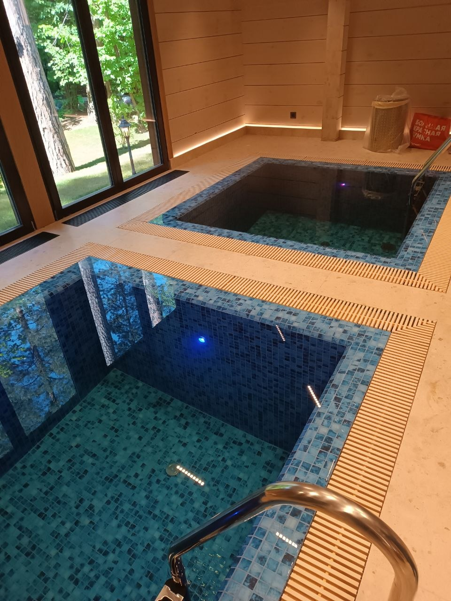
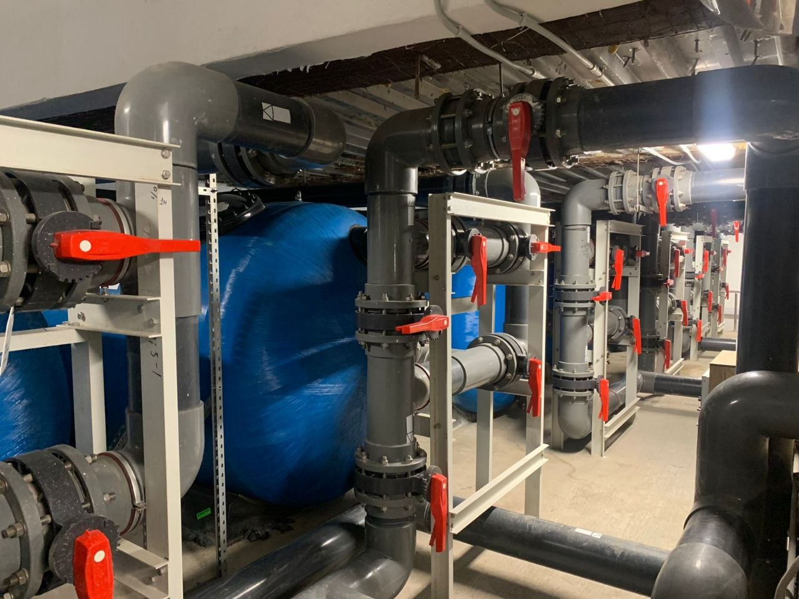
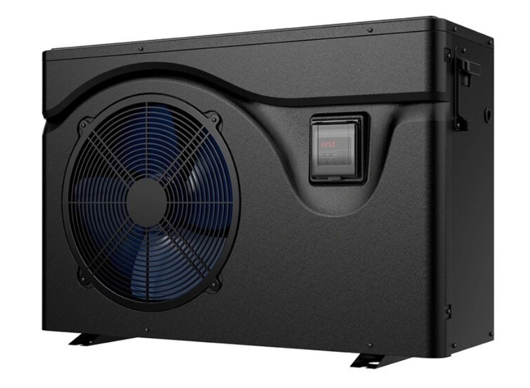
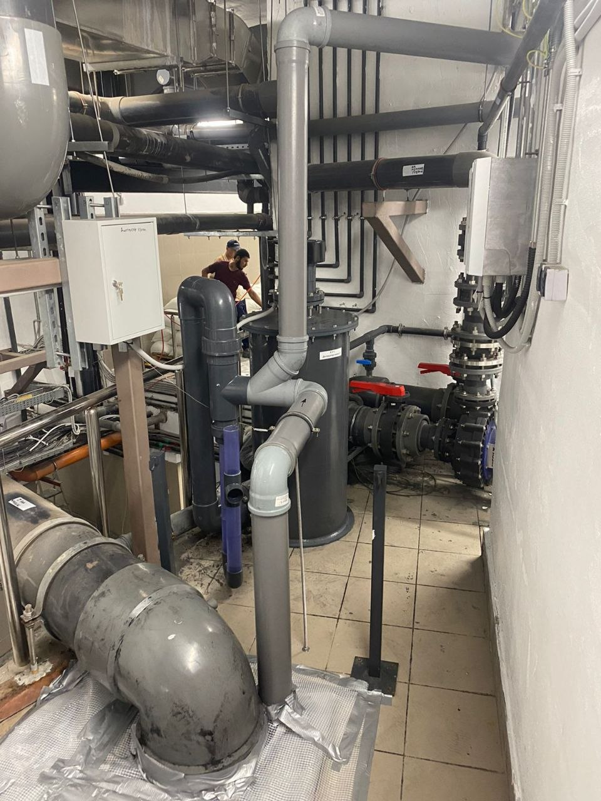
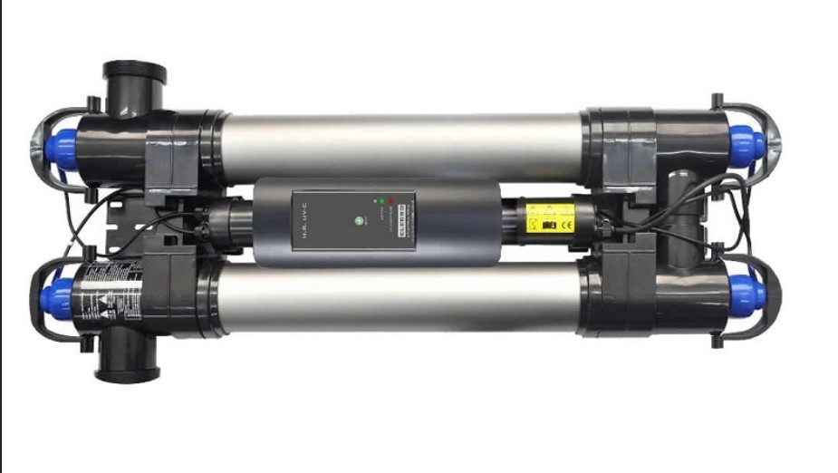
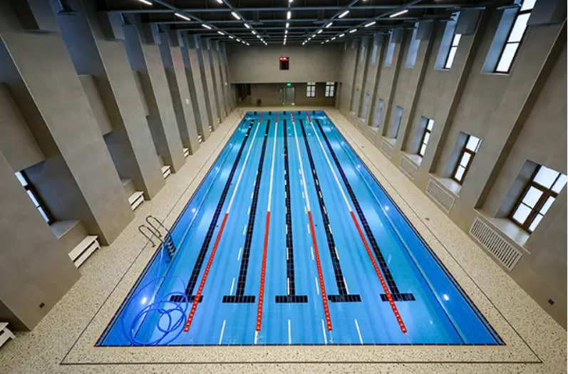

Бетонный или композитный бассейн: что выбрать для частного дома
Бетонный или композитный бассейн что лучше: сравнение срока службы, цены, монтажа, ремонта, индивидуальности, обслуживания и выбора для частного дома.
АЛ Пулс · блог
Материалы о проектировании бассейнов, технологиях строительства, гидроизоляции, оборудовании бассейна и инженерных системах для частных домов.
Материалы о проектировании, строительстве, гидроизоляции, оборудовании, водоподготовке и обслуживании бассейнов.
Материалы о концепции, планировке чаши, инженерных решениях и выборе формата бассейна до начала работ.
Бетонный или композитный бассейн что лучше: сравнение срока службы, цены, монтажа, ремонта, индивидуальности, обслуживания и выбора для частного дома.

Как выбрать бассейн для частного дома: формат чаши, размер, расположение, оборудование, бюджет, безопасность и эксплуатация под ключ.

Композитный бассейн под ключ для загородного дома: плюсы, ограничения, монтаж, оборудование, подготовка основания и уход.

Проектирование бассейнов для частных домов: посадка на участке, конструкция чаши, гидравлика, оборудование, безопасность и дизайн.

Скиммерный или переливной бассейн: отличия гидравлики, уровня воды, внешнего вида, стоимости, технического помещения и обслуживания.

Техническое помещение для бассейна: размеры, оборудование и требования. Экспертный разбор, стоимость бассейна, оборудование бассейна, фильтрация воды,...
Статьи о технологии строительства, сроках работ и практических способах снизить риски на стройке.

Бетонный бассейн под ключ: преимущества монолитной чаши, этапы строительства, гидроизоляция, отделка, инженерия и особенности эксплуатации.

Сколько строится бассейн под ключ: календарный план, этапы, технологические паузы, причины задержек и как подготовиться к запуску без срыва сроков.

Подробно разбираем строительство бассейна под ключ: этапы, сроки, состав работ, смету, оборудование, частые ошибки и как заказать бассейн без...
Раздел о герметичности чаши, узлах, примыканиях и типичных причинах протечек.

Гидроизоляция бассейна: причины протечек и способы устранения. Экспертные решения, диагностика, сервис и коммерческое внедрение под ключ.

Гидроизоляция бассейна: материалы, технологии, узлы примыканий, контроль качества, испытания чаши и ошибки, которые приводят к протечкам.
Подбор отделочных материалов, их плюсы и минусы, срок службы и влияние на эксплуатацию.

Облицовка бассейна: плитка, мозаика, ПВХ плёнка или камень. Экспертный разбор, стоимость бассейна, оборудование бассейна, фильтрация воды,...

Плёнка ПВХ для бассейна: плюсы, минусы и срок службы. Экспертный разбор, стоимость бассейна, оборудование бассейна, фильтрация воды, гидроизоляция и...
Материалы о фильтрации, насосах, подогреве, покрытии и других узлах инженерной системы.

Фильтрация воды в бассейне: выбор фильтра, насоса, загрузки, скорости циркуляции, промывки и режима работы для частного бассейна.

Накрытие для бассейна: роллеты, тентовые покрытия, зимние накрытия и павильоны для безопасности, экономии тепла и защиты воды от мусора.

Как выбрать оборудование для бассейна: насосы, фильтры, подогрев, автоматика, водоподготовка, подсветка и техническое помещение.

Озонатор для бассейна: как озон очищает воду, чем отличается от УФ и хлора, как проектируется контактная емкость, какие ошибки опасны и сколько стоит...

Подогрев воды в бассейне: сравнение теплового насоса, теплообменника и электрического нагревателя, расчет мощности, расходы и комфорт сезона.

Тепловой насос для бассейна: расчет мощности по объему, теплопотерям и сезону, сравнение с теплообменником, требования к монтажу, автоматике и...
Практика очистки и обеззараживания воды, баланс pH и подбор систем обработки без лишней химии.

Баланс pH воды в бассейне: нормы, причины отклонений, влияние на химию, оборудование, отделку, комфорт купания и регулярный контроль.

Бассейн без хлора: ультрафиолет, озон, электролиз соли, активный кислород и комбинированная водоподготовка для частного бассейна.
Почему мутнеет вода в бассейне и как её быстро очистить. Экспертные решения, диагностика, сервис и коммерческое внедрение под ключ.

Солевой электролиз для бассейна: принцип работы, плюсы и ограничения, требования к оборудованию, расчет соли, обслуживание ячейки и сравнение с...

Ультрафиолет для бассейна: принцип УФ-обеззараживания, подбор мощности, место в системе фильтрации, плюсы, ограничения, обслуживание ламп и частые...
Статьи о автоматическом дозировании и управлении бассейном без постоянной ручной настройки.

Автоматическая станция дозирования бассейна: зачем нужна, как работает контроль pH и хлора, сколько стоит, какие ошибки допускают при монтаже и...

Автоматизация бассейна для частного дома: дозирование химии, управление фильтрацией, подогревом, подсветкой, накрытием и удаленный контроль.
Подсветка, световые сценарии и декоративные решения для воды и зоны отдыха.

Подсветка бассейна: виды светильников и сценарии освещения. Экспертный разбор, стоимость бассейна, оборудование бассейна, фильтрация воды,...

Звёздное небо в бассейне и SPA-зоне: как создаётся эффект. Экспертный разбор, стоимость бассейна, оборудование бассейна, фильтрация воды,...
Сезонная подготовка, консервация, расконсервация и регулярный сервис для стабильной работы бассейна.

Чистка бассейна после зимы: как убрать налёт, мусор, мутную или зеленую воду, проверить оборудование бассейна, насос, фильтрацию и безопасно запустить...

Консервация бассейна на зиму под ключ: подготовка воды, снижение уровня, защита труб, оборудования, форсунок, чаши и накрытия от морозов.

Обслуживание бассейна в частном доме: регулярная фильтрация, химия воды, чистка чаши, сезонная консервация и профилактика оборудования.
Обслуживание бассейна зимой: консервация и запуск. Экспертные решения, диагностика, сервис и коммерческое внедрение под ключ.
Расконсервация бассейна весной: снятие накрытия, очистка чаши, проверка оборудования, запуск фильтрации, водоподготовка и безопасный старт сезона.
Как формируется бюджет бассейна, где возникают основные затраты и как их заранее спрогнозировать.

Электропотребление бассейна: расходы на насосы, фильтрацию, подогрев, подсветку, автоматику и способы снизить стоимость эксплуатации.

Как уменьшить стоимость строительства бассейна без потери качества. Экспертный разбор, стоимость бассейна, оборудование бассейна, фильтрация воды,...

Смета на строительство бассейна: что должно быть в расчёте. Экспертный разбор, стоимость бассейна, оборудование бассейна, фильтрация воды,...

Бетонный бассейн цена под ключ: что входит в смету, сколько стоит чаша, оборудование, гидроизоляция, отделка и как сравнивать предложения подрядчиков.

Подробно разбираем, сколько стоит построить бассейн в 2026 году: размеры, тип чаши, оборудование, отделка, инженерия, участок и способы оптимизировать...
Разбор ошибок, которые приводят к переделкам, протечкам и удорожанию эксплуатации.

Главные ошибки при строительстве бассейнов: проектирование без расчетов, слабая гидроизоляция, неправильное оборудование и экономия на инженерии.
Подбор формата бассейна для дома и участка, а также статьи о заказе проекта под ключ.

Бассейн в доме: особенности строительства крытой чаши, вентиляция, осушение, гидроизоляция, отделка и интеграция с интерьером.

Переливной бассейн под ключ: плюсы, минусы, цена и обслуживание. Экспертный разбор, стоимость бассейна, оборудование бассейна, фильтрация воды,...

Скиммерный бассейн под ключ: когда это оптимальный вариант. Экспертный разбор, стоимость бассейна, оборудование бассейна, фильтрация воды,...
Уличный бассейн для загородного дома: выбор места, защита от погоды, подогрев, накрытие, терраса, сезонность и обслуживание.

Как заказать бассейн под ключ и выбрать подрядчика: критерии, вопросы на консультации, признаки ненадёжной компании, смета, договор и CTA к заявке.